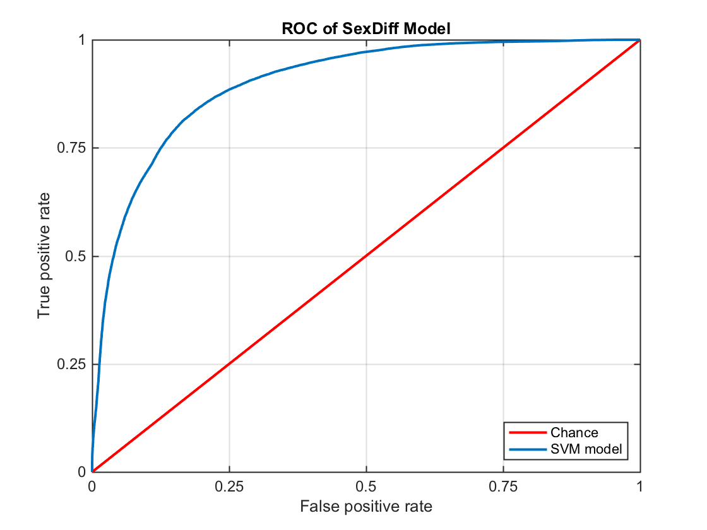
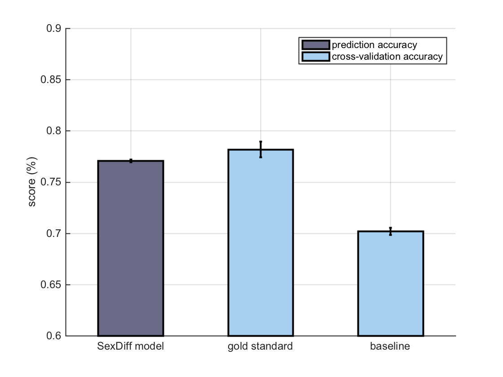

Multivariate model of neuroanatomical sex difference, using SVM
This demo accompanies below paper: XXX
This demo includes:
- Building a model on the FreeSurfer outputs of morphological analysis on PNC data
- Testing the model on an independent dataset (PING)
For FreeSurfer toolkit see: http://freesurfer.net
FreeSurfer analysis was performed using LONI pipeline: http://pipeline.loni.usc.edu
Info about PNC study can be found: http://www.med.upenn.edu/bbl/philadelphianeurodevelopmentalcohort.html
Info about PNC study can be found: http://pingstudy.ucsd.edu
Author: Farshid Sepehrband @fsepehrband Email: farshid.sepehrband@loni.usc.edu
Contents
- Initiate
- Read FreeSurfer's output
- Obtain indices of Destrieux atlas for neuroanatomical features of interest
- Build the SVM model on neuroanatomical data of PNC subjects
- predict sex of PING subject's with this model
- Compare prediction accuracy of the model with gold standard and baseline models
- Plot neuroanatomical features, ranked based on their SVM beta weight
Initiate
clear all;clc;close all % add repository path Repo = '/Volumes/candl/farshid/BDDS/PNC/BDDS_AnatSexDiff'; addpath(genpath(Repo)); cd(Repo)
Read FreeSurfer's output
read FreeSurfer outputs of the PNC dataset
x_pnc = table2array(readtable('data/pnc_fs.csv')); % read FreeSurfer outputs of the PING dataset x_ping = table2array(readtable('data/ping_fs.csv')); % read feature names load('data/fsNames.mat');
Obtain indices of Destrieux atlas for neuroanatomical features of interest
Destreiux atlas and four neuroanatomical features were selected based on initial analysis of the PNC data (See above paper for more detail).
indFS = false(size(x_pnc,2),1); for i = 1:size(anatNames,2) if ~isempty(findstr(anatNames{i},':FS_aparc_2009:')) ... && (~isempty(findstr(anatNames{i},'thickness:')) ... || ~isempty(findstr(anatNames{i},'volume')) ... || ~isempty(findstr(anatNames{i},'meancurv')) ... || ~isempty(findstr(anatNames{i},'area')) ) indFS(i) = true; end end new_names = anatNames(indFS(1:end-1)); % add age to feature matrix indFS(end-1)=1;
Build the SVM model on neuroanatomical data of PNC subjects
% k-fold cross-validation (k=5) % with 100 permutation kFoldval = 5; NumPermut = 100; % train the SVM model inputMatrix = [x_pnc(:,indFS) x_pnc(:,end)]; % see SexDiff_SVM function for details of classification [Xroc,Yroc,VA,AUC,OptROC,pnc_classifier] = ... SexDiff_SVM(inputMatrix,kFoldval,NumPermut,new_names); % plot the ROC curve of trained model figure(1) plot([0 1],[0 1],'r','LineWidth',2); grid on hold on plot(mean(Xroc,2),mean(Yroc,2),'LineWidth',2) set(gca,'xtick',0:0.25:1) set(gca,'ytick',0:0.25:1) xlabel('False positive rate') ylabel('True positive rate') title('ROC of SexDiff Model') legend('Chance','SVM model','Location','SouthEast') set(gca,'LineWidth',1,'FontSize',12,'FontName','Arial'); set(gcf, 'PaperUnits', 'centimeters'); set(gcf, 'PaperPosition', [0 0 6 6]);
predict sex of PING subject's with this model
% separate labels for testing features_ping = x_ping(:,indFS); labels_ping = x_ping(:,end); % for each permutation, perform prediction and evaluate predSex = nan(size(x_ping,1),NumPermut); % to store predicted value PA_ping = nan(1,NumPermut); % to store prediction accuracy for i = 1:NumPermut % predict Classifier = pnc_classifier(i).ClassificationSVM; predSex(:,i) = Classifier.predict(features_ping); % measure prediction accuarcy (mean absolute error) PA_ping(i) = sum(abs(predSex(:,i)-labels_ping)==0)/length(labels_ping); % derive other classification performance measures (e.g. confusion matrix) CP(i) = classperf(labels_ping,predSex(:,i)); end for i = 1:NumPermut mCP(1,i) = CP(i).DiagnosticTable(1,1); mCP(2,i) = CP(i).DiagnosticTable(1,2); mCP(3,i) = CP(i).DiagnosticTable(2,1); mCP(4,i) = CP(i).DiagnosticTable(2,2); end ConfMatrix = reshape(mean(mCP,2),2,2); ConfMatrix = array2table(ConfMatrix); ConfMatrix.Properties.RowNames={'female','male'}; ConfMatrix.Properties.VariableNames={'predicted_female','predicted_male'}; fprintf('Prediction accuracy = %0.1f (%%) \n', mean(PA_ping)*100) ConfMatrix
Prediction accuracy = 77.1 (%)
ConfMatrix =
predicted_female predicted_male
________________ ______________
female 290.99 69.01
male 87.3 234.7
Compare prediction accuracy of the model with gold standard and baseline models
gold standard: a model that is built on same FreeSurfer data of PING subjects baseline: a model that is built only on eTIV of PING subjects
ping_fs = [x_ping(:,indFS) x_ping(:,end)]; [~,~,VA_ping,AUC_ping,~,~] = ... SexDiff_SVM(ping_fs,kFoldval,NumPermut,new_names); ping_eTIV = [x_ping(:,end-2:end)]; [~,~,VA_ping_eTIV,AUC_ping_eTIV,~,~] = ... SexDiff_SVM(ping_eTIV,kFoldval,NumPermut); % compare accuracies figure(2) modelComp = [VA_ping' VA_ping_eTIV']; hold on bar(1,mean(PA_ping),0.5,'FaceColor',[.42 .42 .52],'LineWidth',2) bar([2 3],mean(modelComp),0.5,'FaceColor',[.65 .81 .94],'LineWidth',2) errorbar(1,mean(PA_ping),std(PA_ping),'k.','LineWidth',2) errorbar([2 3],mean(modelComp),std(modelComp),'k.','LineWidth',2) ylim([.6 .9]) ylabel('score (%)') legend('prediction accuracy','cross-validation accuracy') set(gca,'xtick',1:3,'xtickLabels',{'SexDiff model','gold standard','baseline'}) grid on set(gca,'LineWidth',1,'FontSize',12,'FontName','Arial'); set(gcf, 'PaperUnits', 'centimeters'); set(gcf, 'PaperPosition', [0 0 8 6]);
Plot neuroanatomical features, ranked based on their SVM beta weight
for i = 1:NumPermut WW(:,i) = pnc_classifier(i).ClassificationSVM.Beta(1:end-1); end Weights_new = mean(WW,2); [inda,indb] = sort(abs(Weights_new),'descend'); Weights_ordered = Weights_new(indb); ordered_names = new_names(indb); figure(3) stem(Weights_ordered(1:30),'fill','LineStyle','none','MarkerSize',6) set(gca,'xtick',1:30,... 'xtickLabels',ordered_names(1:30),'TickLabelInterpreter','none'); set(gca,'ytick',-2:2,'ytickLabels',-2:2); box off set(gca,'xgrid','on') ylim([-2.2 2.2]) xlim([0 31]) camroll(-90)